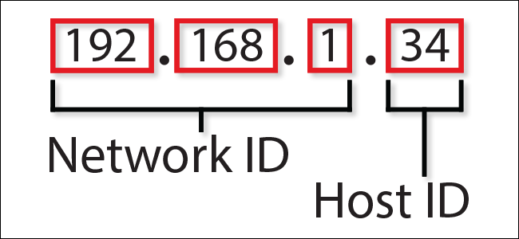

- An Internet Protocol address (IP address) is a numerical label assigned to each device connected to a computer network that uses the Internet Protocol for communication.
- A protocol is a well known set of rules and standards, that if all parties agree to use it, will allow them to communicate without trouble.
- All the different devices on the internet have unique addresses. An address on the internet is just a number, similar to a phone number or a sort of street address, that's unique to each computer or device at the edge of the network.
- The addressing system for computers on the internet is similar and the most important protocols used in internet communication simply called the internet protocol or IP.
- It's just a bunch of numbers. These numbers are organized in a hierarchy.Each of these numbers is represented in bits. Traditional IP addresses are 32 bits long, with 8 bits for each part of the address.
- IPv4, 32 bits long, designed in 1973 and was widely adopted in the early 80s, and provides for more than 4 billion unique addresses for devices connecting to the Internet.
- IPv6, a longer IP address format which uses 128 bits per address and provides over 340 undecillion unique addresses.

- Information on the internet goes from one computer to another in what we call a packet of information and a packet travels from one place to another on the Internet a lot like how you might get from one place to another in a car.
- If we have a very large image to send to a friend or upload to a website, that image might be made up of 10s of millions of bits of 1s and 0s, too many to send along in one packet. Since it's data on a computer, the computer sending the image can quickly break it into hundreds or even thousands of smaller parts called packets.
- Each packet has the internet address of where it came from and where it's going.
- Special computers on the internet called routers act like traffic managers to keep the packets moving through the networks smoothly.
- If one route is congested, individual packets may travel different routes through the internet and they may arrive at the destination at slightly different times or even out of order.
- As part of the internet protocol, every router keeps track of multiple paths for sending packets, and it chooses the cheapest available path for each piece of data based on destination IP address for the packet.
- Cheapest in this case doesn't mean cost, but time and non-technical factors such as politics and relationships between companies.
- Routing is the process of selecting a path for traffic in a network or between or across multiple networks.
- Routing is the higher-level decision making that directs network packets from their source toward their destination through intermediate network nodes by specific packet forwarding mechanisms.
- Routers act like traffic managers. Path selection involves applying a routing metric to multiple routes to select (or predict) the best route.
- Most routing algorithms use only one network path at a time.